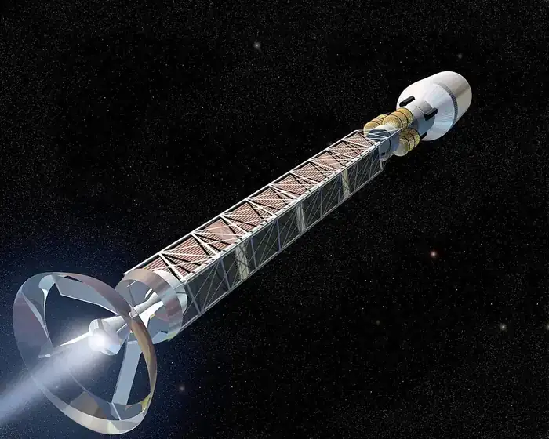
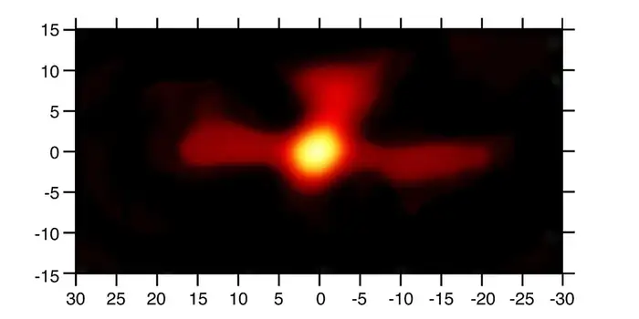

The idea
In 1956, Tsung-Dao Lee and Chen-Ning Yang noted that the weak interaction might not conserve parity, and asked whether the universe could be symmetric in a hidden way: a mirror sector of particles, identical in their physics but interacting with ours only through gravity.
Maps, diagrams and images




The appeal is that it needs no new tuning. If the mirror sector exists, its particles would clump like ours, and the clumps would be dark matter — a natural candidate that arrives from a symmetry rather than an invented particle.
Why it is untested
Mirror matter interacts only gravitationally, so it cannot be seen, and its presence can only be inferred through gravity. Experiments look for mixing — photon–mirror-photon oscillation, neutron–mirror-neutron oscillation — and have set tight limits without finding anything. The parameter space shrinks but is not closed.
The deeper problem is that the idea makes few predictions sharp enough to fail. A theory that can accommodate any dark matter distribution is hard to distinguish from a description of it.
Documented: the symmetry argument, and the mixing experiments that constrain it.
Not observed: any mirror particle, or any mixing effect.
Not excluded: the parameter space, which is large and shrinking.
Not favoured: by any data — WIMPs, axions and primordial black holes all have more experimental traction.
The honest label: fringe — a serious idea with a real literature, filed here because it has no evidence rather than because it is unreasonable.
Why it is in the archive
Because the archive distinguishes fringe from crank: mirror matter is proposed by working physicists, published in physical review journals, and tested. It is fringe because it is unevidenced, not because it is silly.
Open resources on this topic
- BookImplications of the DAMA/NaI and CDMS experiments for mirror matter-type dark matter — R. Foot · 2006 (Internet Archive, free to read)
- BookBrane matter, hidden or mirror matter, their various avatars and mixings: many faces of the same physics (Internet Archive, free to read)
- BookMirror matter — ['A. Yu. Ignatiev', 'R. R. Volkas'] · 2003 (Internet Archive, free to read)
- PapersOpen-access articles: DOAJ · PubMed Central · Internet Archive Scholar
- BooksPublic-domain and borrowable copies: Open Library · Project Gutenberg · Google Books
Cite this page
Momin, S. (2026). Mirror Matter. The Larger World Archive. https://drsamonline.github.io/LARGE_GLOBE/mirror-matter.htmlMomin, Sohil. “Mirror Matter.” The Larger World Archive, 2026, https://drsamonline.github.io/LARGE_GLOBE/mirror-matter.html.Momin, Sohil. “Mirror Matter.” The Larger World Archive, 2026. https://drsamonline.github.io/LARGE_GLOBE/mirror-matter.html.@misc{mirror2026mirror,
author = {Momin, Sohil},
title = {Mirror Matter},
year = {2026},
howpublished = {The Larger World Archive},
url = {https://drsamonline.github.io/LARGE_GLOBE/mirror-matter.html},
note = {Last reviewed 20 November 2026}
}Last reviewed 20 November 2026 · Corrections policy · this page is not peer reviewed
Sources for this page
- Wikipedia, “Mirror matter” — the proposal and its testsen.wikipedia.org
- Wikipedia, “Dark matter” — the problem it is meant to solveen.wikipedia.org
- Wikipedia, “Parity (physics)” — the symmetry the idea began fromen.wikipedia.org
- Wikipedia, “Neutron oscillation” — one of the experimental handlesen.wikipedia.org